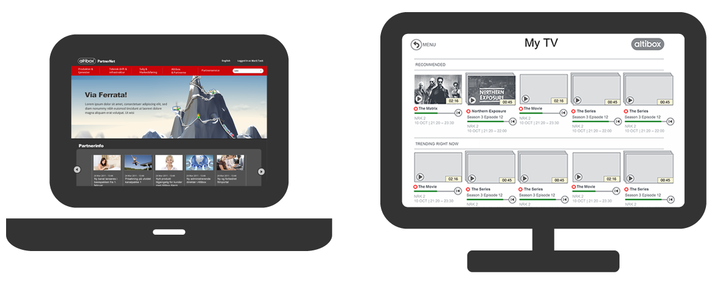

{{> header}}

<div class="article-wrapper">

    <h1>Altibox</h1>

    <h2>The Next Generation TV</h2>

    <div class="method-article-image">
        <div class="method-article-image-element">
            
              <div class="article-image-overlay">
                  <h2><span class="highlight">Wireframes for the new TV platform</span></h2>
              </div>
        </div>
    </div>


    <div class="article-text">

        <p>The way we consume TV is rapidly changing. As a TV and internet provider, Altibox needs to be in the forefront of development
          in order to be competitive. The Next Generation TV Programme involves redesigning the TV portal, developing apps for mobile devices
          and creating rich experiences on the web.


        </br></br>Throughout this project, I worked on user story mapping, wireframing, prototyping for app, web and TV and remote control,
        usability testing and content strategy.
      </p>

    </div>

</div>


{{> footer}}
